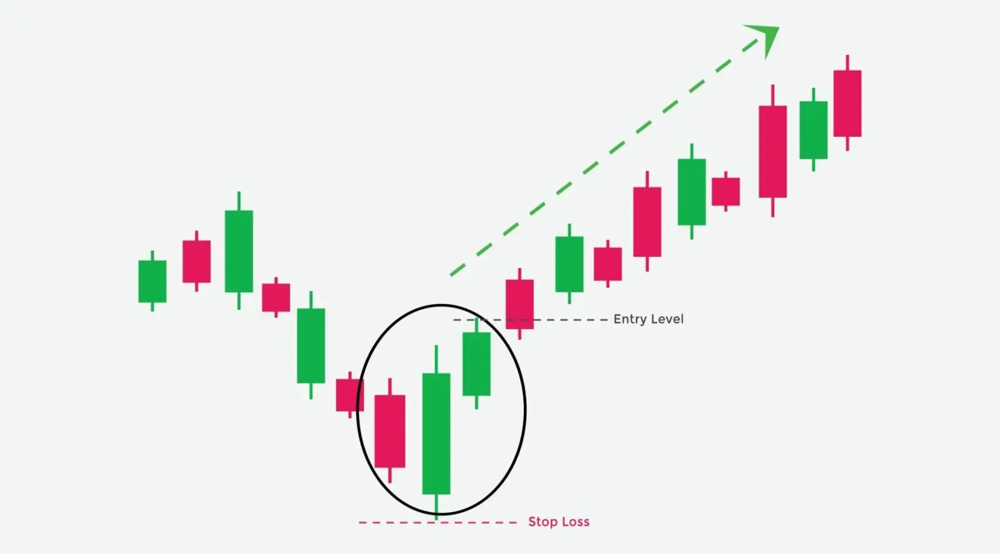

மூன்று அவுட்சாய்ட் அப் பேட்டர்ன் என்பது ஒரு டிரேடிங் முறையில் விளையாடும் மாதிரியானது,
அது சந்தையின் கீழ்வளைவு அமைப்பை வரவில்லை, மேல்வளைவான அமைப்பைக் குறிப்பிடுகின்றது.
இந்த இல்லை மூன்று கண்டில் ஸ்டிக் அடிப்படையில் உருவாக்கப்பட்டுள்ளது.
முதல் கண்டில் ஸ்டிக் ஒரு கீழ் வளையும்
டிக், இரண்டாவது கண்டில் ஸ்டிக் என்பது ஒரு மேல் வளையும் டிக், அது
முதல் கண்டில் ஸ்டிக்கின் உடலை முறிவுற்று கொண்டு இருக்கின்றது, மூன்றாவது இல்லை
உயர்முனையான கண்டில் ஸ்டிக் இரண்டாவது கண்டில் ஸ்டிக்கின் உடலை
முறிவுற்றுக் கொள்ளாது.
